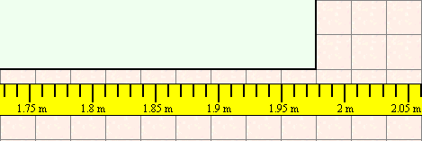

Identify the major source of error in each situation as either systematic or random:
A student is measuring the length of a hallway using a measuring tape, which is calibrated to the nearest centimetre, and has been checked against an external source to be accurate. The measurement is made very carefully and is quoted as being 1.977 m.